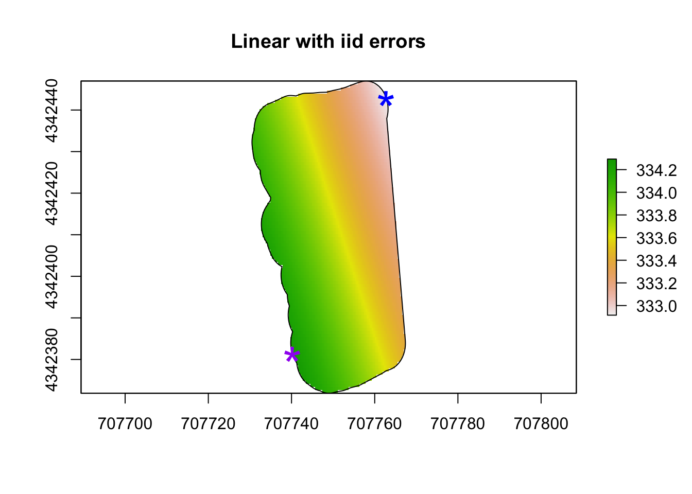
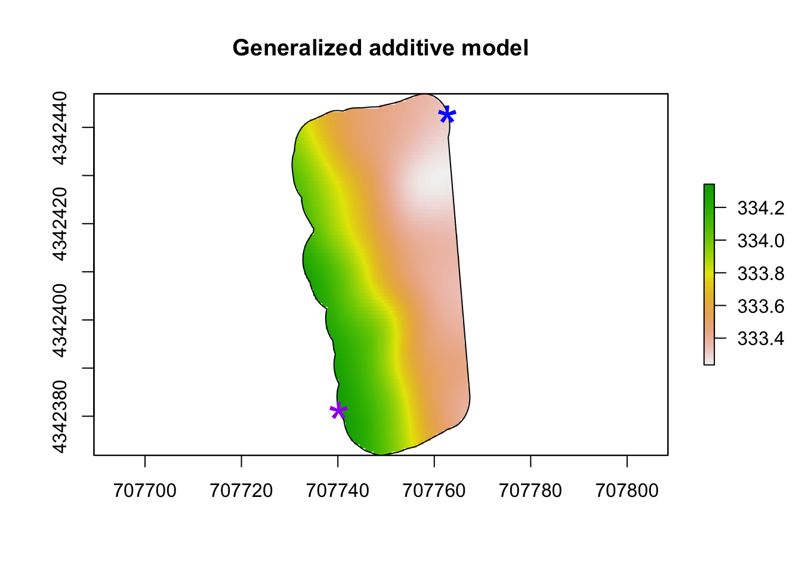
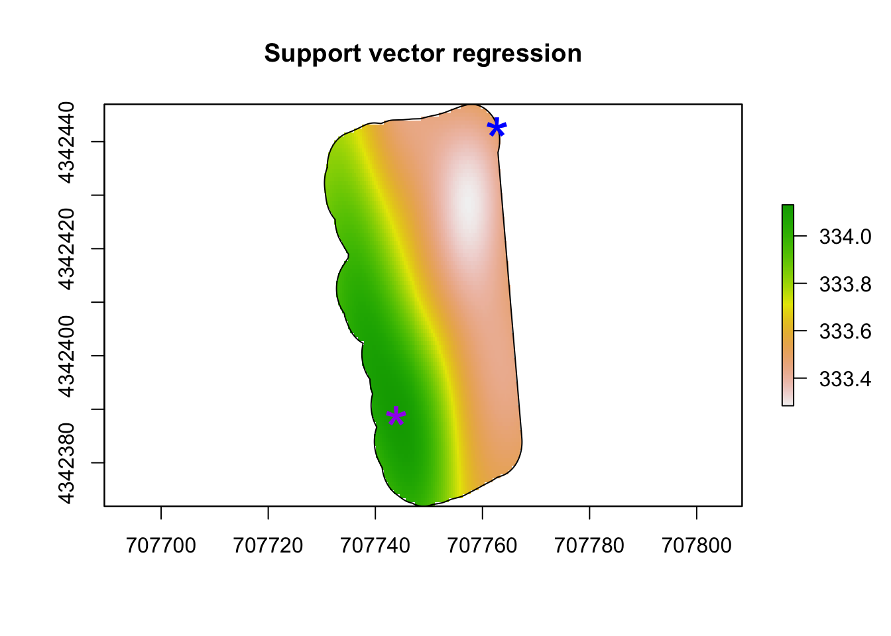

Overview 12 Models
12.1 1. Linear with iid errors
# Statistical analysis 1: non-hierarchical linear model with iid errors
m1 <- lm(elev~s1+I(s1^2)+s2+I(s2^2),data=df.elev)
# Make raster of study area to be able to map predictions from m1
rl.E.y_lin <- raster(,nrow=100,ncols=100,ext=extent(sf.study.area.utm),crs=crs(sf.study.area.utm))
# Make data.frame to be able to make predictions at each pixel (cell of raster)
df.pred <- data.frame(elev = NA,
s1 = xyFromCell(rl.E.y_lin,cell=1:length(rl.E.y_lin[]))[,1],
s2 = xyFromCell(rl.E.y_lin,cell=1:length(rl.E.y_lin[]))[,2])
# Make spatial predictions at each pixel
df.pred$elev <- predict(m1,df.pred[,2:3])
# View first 6 rows of predictions
head(df.pred) ## elev s1 s2
## 1 333.9162 707730.7 4342447
## 2 333.9042 707731.1 4342447
## 3 333.8923 707731.4 4342447
## 4 333.8803 707731.8 4342447
## 5 333.8684 707732.2 4342447
## 6 333.8564 707732.5 4342447# Fill raster file with predictions
rl.E.y_lin[] <- c(df.pred$elev)
rl.E.y_lin <- mask(rl.E.y_lin,sf.study.area.utm)
# Estimate coordinates and amount of maximum elevation
xyFromCell(rl.E.y_lin,cell=which.max(rl.E.y_lin[]))## x y
## [1,] 707740.3 4342381## [1] 334.2931# Plot estimate coordinates of maximum elevation
{plot(rl.E.y_lin, main = "Linear with iid errors") # Plot map of predictions
plot(sf.study.area.utm,add=TRUE)
points(xyFromCell(rl.E.y_lin,cell=which.max(rl.E.y_lin[])),col="purple",pch="*",cex=3)
points(xyFromCell(rl.E.y_lin,cell=which.min(rl.E.y_lin[])),col="blue",pch="*",cex=3)} ## 2. GAM
# Try low-rank Gaussian process (i.e., modern kriging model)
library(mgcv)
m1 <- gam(elev~s(s1,s2,bs="gp"),data=df.elev)
# Make raster of study area to be able to map predictions from m1
rl.E.y_gam <- raster(,nrow=100,ncols=100,ext=extent(sf.study.area.utm),crs=crs(sf.study.area.utm))
# Make data.frame to be able to make predictions at each pixel (cell of raster)
df.pred <- data.frame(elev = NA,
s1 = xyFromCell(rl.E.y_gam,cell=1:length(rl.E.y_gam[]))[,1],
s2 = xyFromCell(rl.E.y_gam,cell=1:length(rl.E.y_gam[]))[,2])
# Make spatial predictions at each pixel
df.pred$elev <- predict(m1,df.pred[,2:3])
# View first 6 rows of predictions
head(df.pred) ## elev s1 s2
## 1 333.8337 707730.7 4342447
## 2 333.8222 707731.1 4342447
## 3 333.8107 707731.4 4342447
## 4 333.7993 707731.8 4342447
## 5 333.7879 707732.2 4342447
## 6 333.7766 707732.5 4342447# Fill raster file with predictions
rl.E.y_gam[] <- c(df.pred$elev)
rl.E.y_gam <- mask(rl.E.y_gam,sf.study.area.utm)
# Estimate coordinates and amount of maximum elevation
xyFromCell(rl.E.y_gam,cell=which.max(rl.E.y_gam[]))## x y
## [1,] 707740.3 4342381## [1] 334.3422# Plot estimate coordinates of maximum elevation
{plot(rl.E.y_gam, main = "Generalized additive model") # Plot map of predictions
plot(sf.study.area.utm,add=TRUE)
points(xyFromCell(rl.E.y_gam,cell=which.max(rl.E.y_gam[])),col="purple",pch="*",cex=3)
points(xyFromCell(rl.E.y_lin,cell=which.min(rl.E.y_lin[])),col="blue",pch="*",cex=3)} ## 3. Regression tree
# Try a regression tree instead!
library(rpart)
m1 <- rpart(elev~s1+s2,data=df.elev)
# Make raster of study area to be able to map predictions from m1
rl.E.y_rt <- raster(,nrow=100,ncols=100,ext=extent(sf.study.area.utm),crs=crs(sf.study.area.utm))
# Make data.frame to be able to make predictions at each pixel (cell of raster)
df.pred <- data.frame(elev = NA,
s1 = xyFromCell(rl.E.y_rt,cell=1:length(rl.E.y_rt[]))[,1],
s2 = xyFromCell(rl.E.y_rt,cell=1:length(rl.E.y_rt[]))[,2])
# Make spatial predictions at each pixel
df.pred$elev <- predict(m1,df.pred[,2:3])
# View first 6 rows of predictions
head(df.pred) ## elev s1 s2
## 1 333.7143 707730.7 4342447
## 2 333.7143 707731.1 4342447
## 3 333.7143 707731.4 4342447
## 4 333.7143 707731.8 4342447
## 5 333.7143 707732.2 4342447
## 6 333.7143 707732.5 4342447# Fill raster file with predictions
rl.E.y_rt[] <- c(df.pred$elev)
rl.E.y_rt <- mask(rl.E.y_rt,sf.study.area.utm)
# Estimate coordinates and amount of maximum elevation
xyFromCell(rl.E.y_rt,cell=which.max(rl.E.y_rt[]))## x y
## [1,] 707737.7 4342400## [1] 334.0958# Plot estimate coordinates of maximum elevation
{plot(rl.E.y_rt, main = "Regression tree") # Plot map of predictions
plot(sf.study.area.utm,add=TRUE)
points(xyFromCell(rl.E.y_rt,cell=which.max(rl.E.y_rt[])),col="purple",pch="*",cex=3)
points(xyFromCell(rl.E.y_lin,cell=which.min(rl.E.y_lin[])),col="blue",pch="*",cex=3)} ## 4. Support vector regression
## 4. Support vector regression
# Try support vector regression (or machine)!
library(e1071)
m1 <- svm(elev~s1+s2,data=df.elev)
# Make raster of study area to be able to map predictions from m1
rl.E.y_svr <- raster(,nrow=100,ncols=100,ext=extent(sf.study.area.utm),crs=crs(sf.study.area.utm))
# Make data.frame to be able to make predictions at each pixel (cell of raster)
df.pred <- data.frame(elev = NA,
s1 = xyFromCell(rl.E.y_svr,cell=1:length(rl.E.y_svr[]))[,1],
s2 = xyFromCell(rl.E.y_svr,cell=1:length(rl.E.y_svr[]))[,2])
# Make spatial predictions at each pixel
df.pred$elev <- predict(m1,df.pred[,2:3])
# View first 6 rows of predictions
head(df.pred) ## elev s1 s2
## 1 333.7520 707730.7 4342447
## 2 333.7524 707731.1 4342447
## 3 333.7522 707731.4 4342447
## 4 333.7515 707731.8 4342447
## 5 333.7500 707732.2 4342447
## 6 333.7479 707732.5 4342447# Fill raster file with predictions
rl.E.y_svr[] <- c(df.pred$elev)
rl.E.y_svr <- mask(rl.E.y_svr,sf.study.area.utm)
# Estimate coordinates and amount of maximum elevation
xyFromCell(rl.E.y_svr,cell=which.max(rl.E.y_svr[]))## x y
## [1,] 707744 4342389## [1] 334.1314# Plot estimate coordinates of maximum elevation
{plot(rl.E.y_svr, main = "Support vector regression") # Plot map of predictions
plot(sf.study.area.utm,add=TRUE)
points(xyFromCell(rl.E.y_svr,cell=which.max(rl.E.y_svr[])),col="purple",pch="*",cex=3)
points(xyFromCell(rl.E.y_lin,cell=which.min(rl.E.y_lin[])),col="blue",pch="*",cex=3)} ## 5. Boosted regession tree
## Distribution not specified, assuming gaussian ...# Make raster of study area to be able to map predictions from m1
rl.E.y_gbm <- raster(,nrow=100,ncols=100,ext=extent(sf.study.area.utm),crs=crs(sf.study.area.utm))
# Make data.frame to be able to make predictions at each pixel (cell of raster)
df.pred <- data.frame(elev = NA,
s1 = xyFromCell(rl.E.y_gbm,cell=1:length(rl.E.y_gbm[]))[,1],
s2 = xyFromCell(rl.E.y_gbm,cell=1:length(rl.E.y_gbm[]))[,2])
# Make spatial predictions at each pixel
df.pred$elev <- predict(m1,df.pred[,2:3])
# View first 6 rows of predictions
head(df.pred) ## elev s1 s2
## 1 333.7888 707730.7 4342447
## 2 333.7888 707731.1 4342447
## 3 333.7888 707731.4 4342447
## 4 333.7888 707731.8 4342447
## 5 333.7888 707732.2 4342447
## 6 333.7888 707732.5 4342447# Fill raster file with predictions
rl.E.y_gbm[] <- c(df.pred$elev)
rl.E.y_gbm <- mask(rl.E.y_gbm,sf.study.area.utm)
# Estimate coordinates and amount of maximum elevation
xyFromCell(rl.E.y_gbm,cell=which.max(rl.E.y_gbm[]))## x y
## [1,] 707739.5 4342392## [1] 334.1994# Plot estimate coordinates of maximum elevation
{plot(rl.E.y_gbm, main = "Boosted regression tree") # Plot map of predictions
plot(sf.study.area.utm,add=TRUE)
points(xyFromCell(rl.E.y_gbm,cell=which.max(rl.E.y_gbm[])),col="purple",pch="*",cex=3)
points(xyFromCell(rl.E.y_lin,cell=which.min(rl.E.y_lin[])),col="blue",pch="*",cex=3)}